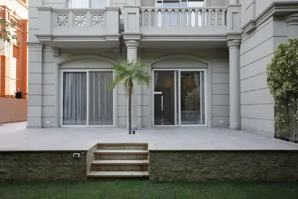

Contracting & fit-out across Egypt — from bare concrete to finished space.



Contracting & fit-out across Egypt — from bare concrete to finished space.
IKDU is ancient Egyptian for the one who builds and the one who shapes. We deliver residential and commercial spaces in Cairo, Giza and the North Coast, from bare concrete to handover.
Tell us about your space. We'll draw it, price it, and build it.
WhatsApp ushello@ikdu.build